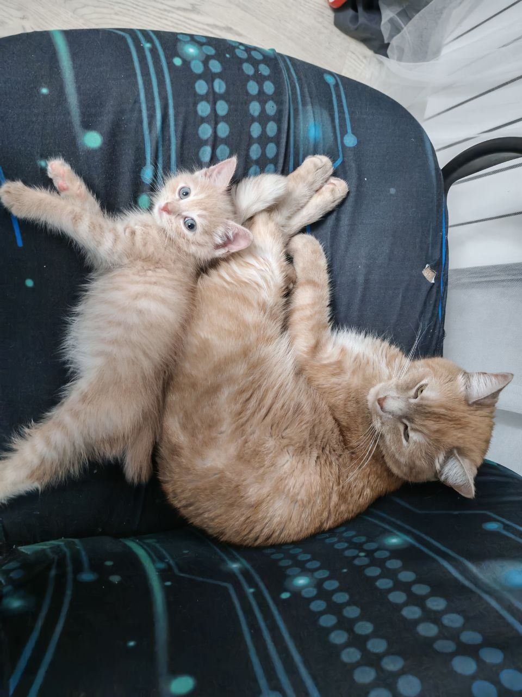

О себе | [ Моя семья ] | Образование | Хобби | Достижения | Успеваемость
Нет ничего важнее семьи! © Доминик Торетто

| Событие / Традиция | Как мы это проводим |
|---|---|
| Выходные дни | Совместные семейные ужины, обсуждение новостей за неделю и просмотр кино |
| Летний сезон | Выезды на природу, дачные пикники и отдых у воды |
| Новый год и праздники | Сбор за большим столом с традиционными блюдами и настольными играми |
← Назад: О себе | Далее: Образование →